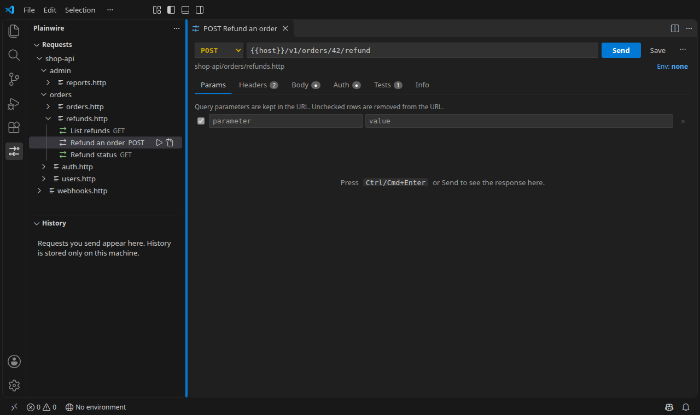

Organize API requests in folders and collections in VS Code
In Plainwire a collection is a .http file and a folder is a folder. The sidebar shows your workspace’s folders, the .http and .rest files in them, and the requests in each file. You can drag requests between files, reorder them, rename and duplicate them, and drag files into other folders. Because everything is a plain file, the structure you build is the structure in git: a teammate who pulls gets the same tree, with no account and no sync service.

The layout: folders, files, requests
shop-api/
admin/
reports.http
orders/
orders.http one collection: List orders, Create order, Cancel order
refunds.http another: List refunds, Refund an order, Refund status
auth.http
users.http
http-client.env.json environments for everything under shop-api/
Each request in a file starts with a ### line, and the text after ### is the name the sidebar shows. A file can hold one request or fifty; a common split is one file per resource (orders.http, users.http) or one per workflow (checkout.http). The .http syntax cheat sheet covers the format.
### List refunds
GET {{host}}/v1/refunds
### Refund an order
# @name refund
POST {{host}}/v1/orders/42/refund
Content-Type: application/json
{"amount": 1999, "reason": "damaged"}
What you can do in the sidebar
| Action | How | What changes on disk |
|---|---|---|
| Reorder requests | Drag a request onto another one in the same file, or Move Up / Move Down (Alt+↑/↓) | The request’s block moves inside the file; nothing else is rewritten |
| Move requests to another collection | Drag onto a file (goes last) or onto a request in it (goes there), or Move to File…; several selected requests move together | The block is cut from one file and pasted into the other, comments, checks and scripts included |
| Rename a request | Rename… or F2 | The ### line only |
| Duplicate a request | Duplicate | A copy below it, titled “(copy)”; its # @name gets a free number so chaining still points at the original |
| Delete | Delete (asks first) | A request’s block is removed (Undo in the file brings it back); files and folders go to the trash |
| New collection or folder | New .http File… / New Folder… on a folder or the view’s menu; orders/list creates the subfolder too | A new file with one starter request, opened in the editor |
| Move or rename files and folders | Drag a file or folder onto a folder, or Rename… | A normal rename, so open editors follow and Explorer Undo works |
| Run a whole folder | Run All Requests in Folder on a folder | Nothing: every request in every file below it is sent in order, with a pass/fail report (tests) |
Every edit is made on the text of the file and keeps the rest of it byte for byte, so a moved request produces a small, readable git diff. File variables (@host = …) and # @import lines belong to the whole file, so they stay where they are when a request moves away. If you move a request that other requests in its old file reuse ({{login.response.body.$.token}}), Plainwire tells you which # @import line keeps them working; see sharing a login between files.
Coming from Thunder Client or Postman
Thunder Client and Postman keep collections and folders in their own storage. Plainwire’s importers write them as files: each collection becomes a folder, each folder a .http file, and folders inside folders become subfolders (Orders / Refunds → Orders/Refunds.http). Requests outside any folder go to requests.http, and environments to http-client.env.json. See Thunder Client to .http and Postman to .http, or try the online converter without installing anything.
| Thunder Client / Postman | Plainwire |
|---|---|
| Collection | A folder of .http files (or one file) |
| Folder | A .http file; nested folders become subfolders |
| Request name | The text after ### |
| Drag to reorder / move | Drag in the sidebar, or Move Up / Down / to File |
| Git Sync (paid in Thunder Client) | The files are in your repository already |
| Collection runner | Run All on a file, a folder or the workspace; the CLI in CI |
Settings
plainwire.collections.compactFolders (default on) shows a folder whose only child is another folder as one row, api/v2, like the Explorer’s compact folders. Files under node_modules and .git are not listed.
FAQ
Does the sidebar keep its own copy of my collections?
No. It reads the files in the workspace every time they change, so editing a .http file by hand, switching git branches or pulling a teammate’s change updates the tree. There is nothing to export or sync.
Can I still edit the files as text?
Yes, and the REST Client, httpYac and the JetBrains HTTP Client read the same files. The sidebar is a view of them, not a separate format.
Does moving a request break request chaining?
Chaining by # @name works within a file and across files that # @import each other. When a move would break a reference, Plainwire warns you and names the import to add.
Is this free?
Yes. Plainwire has no account, no paid plan and no request or collection limits, and it sends nothing except the requests you send. It is MIT-licensed.